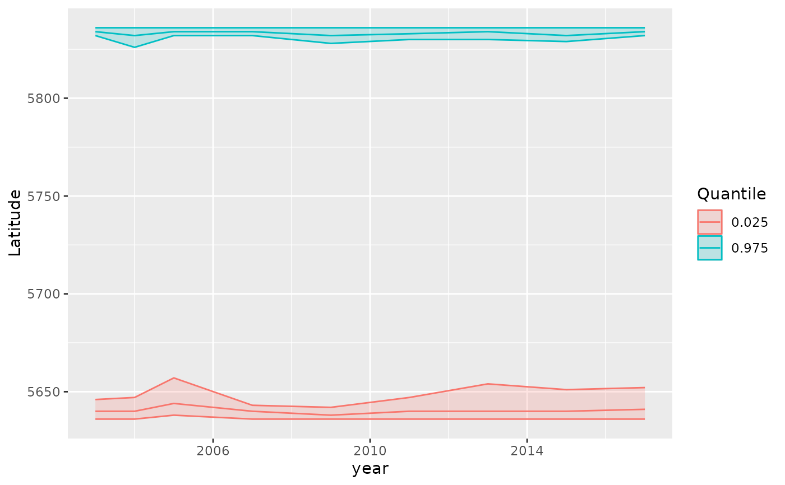

Calculate range edges via simulation from the joint precision matrix
Source:R/get-range-edge.R
get_range_edge.Rd![[Experimental]](figures/lifecycle-experimental.svg)
Calculate range edges as density-weighted quantiles along a spatial axis. Range edges are calculated as the positions along a user-supplied spatial axis (e.g., latitude, coastal distance) where the cumulative proportion of density equals specified quantiles (e.g., 0.01 and 0.99 for the lower and upper 1% range edges). Uncertainty is calculated via simulation from the joint precision matrix.
Usage
get_range_edge(
obj,
axis,
quantiles = c(0.025, 0.975),
level = 0.95,
return_sims = FALSE
)Arguments
- obj
predict.sdmTMB()output withnsim > 0. The prediction object should include predictions on a spatial grid that covers the area of interest.- axis
Numeric vector of the same length as the prediction data, representing the spatial axis along which to calculate range edges (e.g., latitude, coastal distance values). This should align with the rows of the prediction matrix.
- quantiles
Numeric vector of quantiles to calculate. Default is
c(0.025, 0.975)for lower and upper 1% range edges. Common alternatives includec(0.01, 0.99)for 1% edges orc(0.05, 0.5, 0.95)to include the median.- level
The confidence level for uncertainty intervals.
- return_sims
Logical. Return simulation draws? The default (
FALSE) returns a quantile summary of the simulation draws.
Value
A data frame. If return_sims = FALSE:
name of time column (e.g.,
year) that was supplied tosdmTMB()time argumentquantile: the quantile value (fromquantilesargument)est: estimated range edge positionlwr: lower confidence intervalupr: upper confidence intervalse: standard error
If return_sims = TRUE, simulation draws from range edge positions in long format:
name of time column (e.g.,
year)quantile: the quantile value.value: simulated range edge position.iteration: simulation number
Details
This function implements a similar approach to VAST's range edge calculations, following methods from Fredston et al. (2021) and similar studies. The method:
Orders spatial locations by position along the specified axis
Calculates cumulative proportion of total density along that axis
Finds positions where cumulative proportion equals target quantiles
Uses simulation from the joint precision to quantify uncertainty
To find the exact position where the cumulative proportion equals a target quantile, the function uses linear interpolation between adjacent grid points. This provides more accurate range edge estimates than selecting the closest grid point, especially on coarser grids or for extreme quantiles (e.g., 0.01, 0.99).
References
Fredston, A. L., Pinsky, M., Selden, R. L., Szuwalski, C., Thorson, J. T., Gaines, S. D., & Halpern, B. S. (2021). Range edges of North American marine species are tracking temperature over decades. Global Change Biology, 27(13), 3145-3156. doi:10.1111/gcb.15614
Examples
# \donttest{
# Fit a spatiotemporal model
mesh <- make_mesh(pcod, c("X", "Y"), n_knots = 100)
m <- sdmTMB(
density ~ 0 + as.factor(year),
data = pcod, mesh = mesh, family = tweedie(link = "log"),
time = "year", spatiotemporal = "iid", spatial = "on"
)
# Create prediction grid
nd <- replicate_df(qcs_grid, "year", unique(pcod$year))
# Get predictions with simulations
p <- predict(m, newdata = nd, nsim = 100)
# Calculate range edges along latitude (Y coordinate)
edges <- get_range_edge(p, axis = nd$Y)
edges
#> year quantile est lwr upr se
#> 1 2003 0.025 5640.000 5636.00 5646.00 3.053840
#> 2 2003 0.975 5834.000 5832.00 5836.00 1.249849
#> 3 2004 0.025 5640.000 5636.00 5647.05 3.092228
#> 4 2004 0.975 5832.000 5826.00 5836.00 2.714172
#> 5 2005 0.025 5644.000 5638.00 5657.05 5.723988
#> 6 2005 0.975 5834.000 5832.00 5836.00 1.462175
#> 7 2007 0.025 5640.000 5636.00 5643.05 2.045542
#> 8 2007 0.975 5834.000 5832.00 5836.00 1.328268
#> 9 2009 0.025 5638.000 5636.00 5642.00 2.058832
#> 10 2009 0.975 5832.000 5828.00 5836.00 2.378243
#> 11 2011 0.025 5640.000 5636.00 5647.05 3.151000
#> 12 2011 0.975 5832.932 5830.00 5836.00 1.603341
#> 13 2013 0.025 5640.000 5636.00 5654.00 4.218813
#> 14 2013 0.975 5834.000 5830.00 5836.00 1.575239
#> 15 2015 0.025 5640.000 5636.00 5651.05 4.092417
#> 16 2015 0.975 5832.000 5828.95 5836.00 1.873009
#> 17 2017 0.025 5641.000 5636.00 5652.10 4.652098
#> 18 2017 0.975 5834.000 5832.00 5836.00 1.311238
# Plot range edges over time
if (require("ggplot2", quietly = TRUE)) {
ggplot(edges, aes(year, est, colour = as.factor(quantile))) +
geom_line() +
geom_ribbon(aes(ymin = lwr, ymax = upr, fill = as.factor(quantile)),
alpha = 0.2) +
labs(y = "Latitude", colour = "Quantile", fill = "Quantile")
}

# Get simulation draws for further analysis
edges_sims <- get_range_edge(p, axis = nd$Y, return_sims = TRUE)
# }